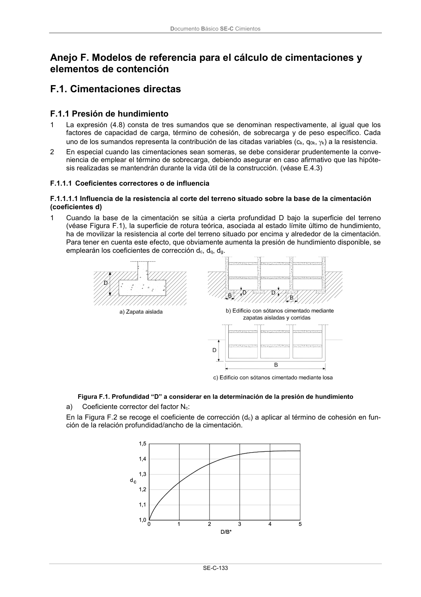
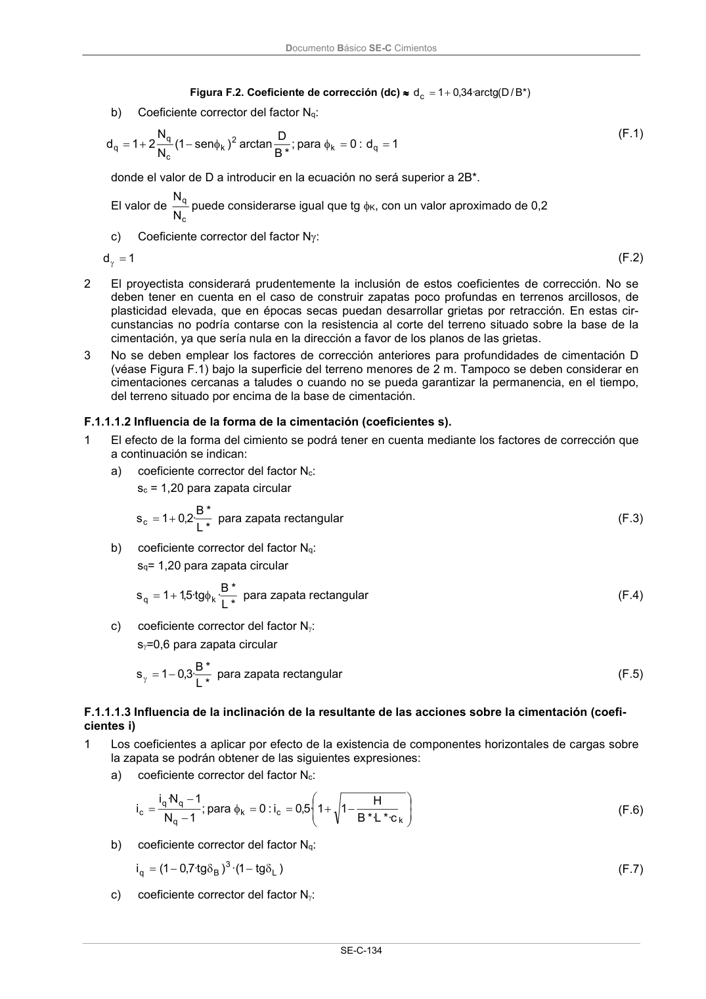
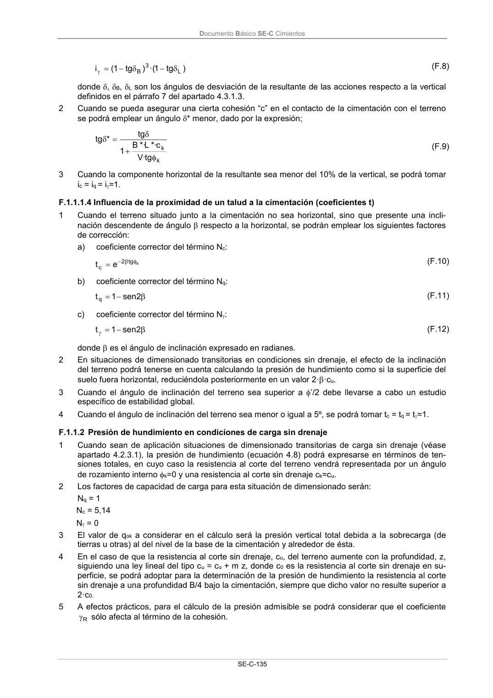

DB-SE-C · Fragmento de PDF p138 · versión 2019-12-20 · capa oficial
Formatos: JSON compacto · Markdown · PDF fuente
Ámbito del documento · texto del ámbito · documento y tablas
ID técnico a0252 · PDF pág. 138-141 · jerarquía no validada por persona · no es capítulo: sin_linea_de_encabezado · padre: raíz · literal original en el contenido: «F.1. Cimentaciones directas F.1.1 Presión de hundimiento»
F.1. Cimentaciones directas F.1.1 Presión de hundimiento F.1.1 Presión de hundimiento 1 La expresión (4.8) consta de tres sumandos que se denominan respectivamente, al igual que los factores de capacidad de carga, término de cohesión, de sobrecarga y de peso específico. Cada uno de los sumandos representa la contribución de las citadas variables (ck, q0k, k) a la resistencia. 2 En especial cuando las cimentaciones sean someras, se debe considerar prudentemente la conve- niencia de emplear el término de sobrecarga, debiendo asegurar en caso afirmativo que las hipóte- sis realizadas se mantendrán durante la vida útil de la construcción. (véase E.4.3) F.1.1.1 Coeficientes correctores o de influencia F.1.1.1.1 Influencia de la resistencia al corte del terreno situado sobre la base de la cimentación (coeficientes d) 1 Cuando la base de la cimentación se sitúa a cierta profundidad D bajo la superficie del terreno (véase Figura F.1), la superficie de rotura teórica, asociada al estado límite último de hundimiento, ha de movilizar la resistencia al corte del terreno situado por encima y alrededor de la cimentación. Para tener en cuenta este efecto, que obviamente aumenta la presión de hundimiento disponible, se emplearán los coeficientes de corrección dc, dq, dg. Figura F.1. Profundidad “D” a considerar en la determinación de la presión de hundimiento a) Coeficiente corrector del factor Nc: En la Figura F.2 se recoge el coeficiente de corrección (dc) a aplicar al término de cohesión en fun- ción de la relación profundidad/ancho de la cimentación. Documento Básico SE-C Cimientos SE-C-134 Figura F.2. Coeficiente de corrección (dc) *) B / D ( arctg · 34 ,0 1 dc b) Coeficiente corrector del factor Nq: 1 d : 0 para ; * B D arctan ) sen 1 ( N N 2 1 d q k 2 k c q q (F.1) donde el valor de D a introducir en la ecuación no será superior a 2B*. El valor de c q N N puede considerarse igual que tg K, con un valor aproximado de 0,2 c) Coeficiente corrector del factor N: 1 d (F.2) 2 El proyectista considerará prudentemente la inclusión de estos coeficientes de corrección. No se deben tener en cuenta en el caso de construir zapatas poco profundas en terrenos arcillosos, de plasticidad elevada, que en épocas secas puedan desarrollar grietas por retracción. En estas cir- cunstancias no podría contarse con la resistencia al corte del terreno situado sobre la base de la cimentación, ya que sería nula en la dirección a favor de los planos de las grietas. 3 No se deben emplear los factores de corrección anteriores para profundidades de cimentación D (véase Figura F.1) bajo la superficie del terreno menores de 2 m. Tampoco se deben considerar en cimentaciones cercanas a taludes o cuando no se pueda garantizar la permanencia, en el tiempo, del terreno situado por encima de la base de cimentación. F.1.1.1.2 Influencia de la forma de la cimentación (coeficientes s). 1 El efecto de la forma del cimiento se podrá tener en cuenta mediante los factores de corrección que a continuación se indican: a) coeficiente corrector del factor Nc: sc = 1,20 para zapata circular * L * B · 2,0 1 sc para zapata rectangular (F.3) b) coeficiente corrector del factor Nq: sq= 1,20 para zapata circular * L * B · tg · 5,1 1 s k q para zapata rectangular (F.4) c) coeficiente corrector del factor N: s=0,6 para zapata circular * L * B · 3,0 1 s para zapata rectangular (F.5) F.1.1.1.3 Influencia de la inclinación de la resultante de las acciones sobre la cimentación (coefi- cientes i) 1 Los coeficientes a aplicar por efecto de la existencia de componentes horizontales de cargas sobre la zapata se podrán obtener de las siguientes expresiones: a) coeficiente corrector del factor Nc: k c k q q q c c *· L *· B H 1 1 · 5,0 i: 0 para ; 1 N 1 N · i i (F.6) b) coeficiente corrector del factor Nq: ) tg 1 ·( ) tg · 7,0 1 ( i L 3 B q (F.7) c) coeficiente corrector del factor N: Documento Básico SE-C Cimientos SE-C-135 ) tg 1 ·( ) tg 1 ( i L 3 B (F.8) donde , B, L son los ángulos de desviación de la resultante de las acciones respecto a la vertical definidos en el párrafo 7 del apartado 4.3.1.3. 2 Cuando se pueda asegurar una cierta cohesión “c” en el contacto de la cimentación con el terreno se podrá emplear un ángulo * menor, dado por la expresión; k k tg · V c *· L *· B 1 tg * tg (F.9) 3 Cuando la componente horizontal de la resultante sea menor del 10% de la vertical, se podrá tomar ic = iq = i=1. F.1.1.1.4 Influencia de la proximidad de un talud a la cimentación (coeficientes t) 1 Cuando el terreno situado junto a la cimentación no sea horizontal, sino que presente una incli- nación descendente de ángulo respecto a la horizontal, se podrán emplear los siguientes factores de corrección: a) coeficiente corrector del término Nc: k tg 2 c e t (F.10) b) coeficiente corrector del término Nq: 2 sen 1 t q (F.11) c) coeficiente corrector del término N: 2 sen 1 t (F.12) donde es el ángulo de inclinación expresado en radianes. 2 En situaciones de dimensionado transitorias en condiciones sin drenaje, el efecto de la inclinación del terreno podrá tenerse en cuenta calculando la presión de hundimiento como si la superficie del suelo fuera horizontal, reduciéndola posteriormente en un valor 2··cu. 3 Cuando el ángulo de inclinación del terreno sea superior a ’/2 debe llevarse a cabo un estudio específico de estabilidad global. 4 Cuando el ángulo de inclinación del terreno sea menor o igual a 5º, se podrá tomar tc = tq = t=1. F.1.1.2 Presión de hundimiento en condiciones de carga sin drenaje 1 Cuando sean de aplicación situaciones de dimensionado transitorias de carga sin drenaje (véase apartado 4.2.3.1), la presión de hundimiento (ecuación 4.8) podrá expresarse en términos de ten- siones totales, en cuyo caso la resistencia al corte del terreno vendrá representada por un ángulo de rozamiento interno k=0 y una resistencia al corte sin drenaje ck=cu. 2 Los factores de capacidad de carga para esta situación de dimensionado serán: Nq = 1 Nc = 5,14 N = 0 3 El valor de qok a considerar en el cálculo será la presión vertical total debida a la sobrecarga (de tierras u otras) al del nivel de la base de la cimentación y alrededor de ésta. 4 En el caso de que la resistencia al corte sin drenaje, cu, del terreno aumente con la profundidad, z, siguiendo una ley lineal del tipo cu = co + m z, donde c0 es la resistencia al corte sin drenaje en su- perficie, se podrá adoptar para la determinación de la presión de hundimiento la resistencia al corte sin drenaje a una profundidad B/4 bajo la cimentación, siempre que dicho valor no resulte superior a 2·c0. 5 A efectos prácticos, para el cálculo de la presión admisible se podrá considerar que el coeficiente R sólo afecta al término de la cohesión. Documento Básico SE-C Cimientos SE-C-136 F.1.1.3 Presión de hundimiento en tensiones efectivas 1 Para situaciones de dimensionado en las que puedan suponerse disipados los excesos de presión intersticial generados por las acciones actuantes sobre la cimentación, la presión de hundimiento (ecuación 4.8) se expresará en términos de tensiones efectivas. 2 Aunque no resulta habitual, también será de aplicación la formulación en tensiones efectivas en situaciones transitorias en las que la disipación de presiones intersticiales no se haya producido (carga sin drenaje) o sea parcial. En estos casos, será necesario determinar previamente el régi- men de presión intersticial correspondiente. 3 La resistencia al corte del terreno vendrá expresada por el ángulo de rozamiento interno efectivo (k= ’) y la cohesión efectiva (ck=c’). 4 Los factores de capacidad de carga se podrán obtener de las siguientes expresiones: ' tg · e ·' sen 1 ' sen 1 q N (F.13) ' cotg )· 1 q N ( c N (F.14) ' tg )· 1 q N ( 5 ,1 N (F.15) 5 El valor de qok a considerar en cálculo será la presión vertical efectiva debida a la sobrecarga al nivel de la base de la cimentación y alrededor de ésta. 6 El valor del peso específico del terreno k a introducir en la formulación analítica será el que re- presente el estado de presiones efectivas por debajo del cimiento, siendo: a) el peso específico aparente, ap, si el nivel freático se encuentra a una profundidad mayor que el ancho B* bajo la base de la cimentación; b) el peso específico sumergido, ', si el nivel freático está situado en o por encima de la base de la cimentación; c) un peso específico intermedio, interpolado linealmente según la expresión (F.16) si el nivel freático está comprendido entre los indicados anteriormente ' B z ' ap k (F.16) siendo z la distancia a la que se encuentra el nivel freático por debajo de la base de la cimenta- ción. d) Si existiera un flujo de agua ascendente, de gradiente iv, el valor característico del peso espe- cífico de cálculo será: k =’ – iv·w (F.17) siendo ' el peso específico sumergido del terreno; w el peso específico del agua; iv el gradiente vertical medio en la zona de espesor 1,5B* bajo la base de la cimentación.



PDF fuente redistribuible: copia fiel enlazada en esta página (SHA256 verificado).